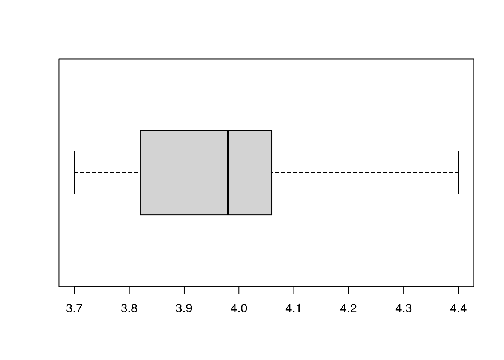
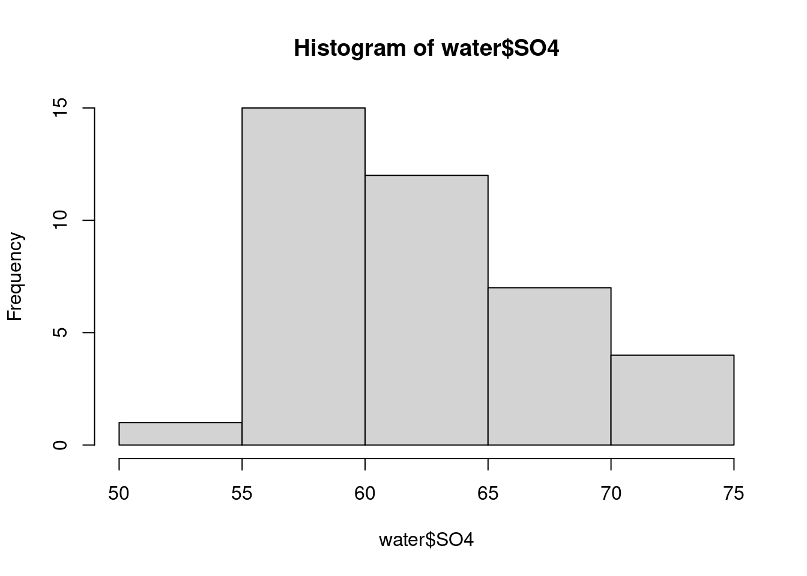
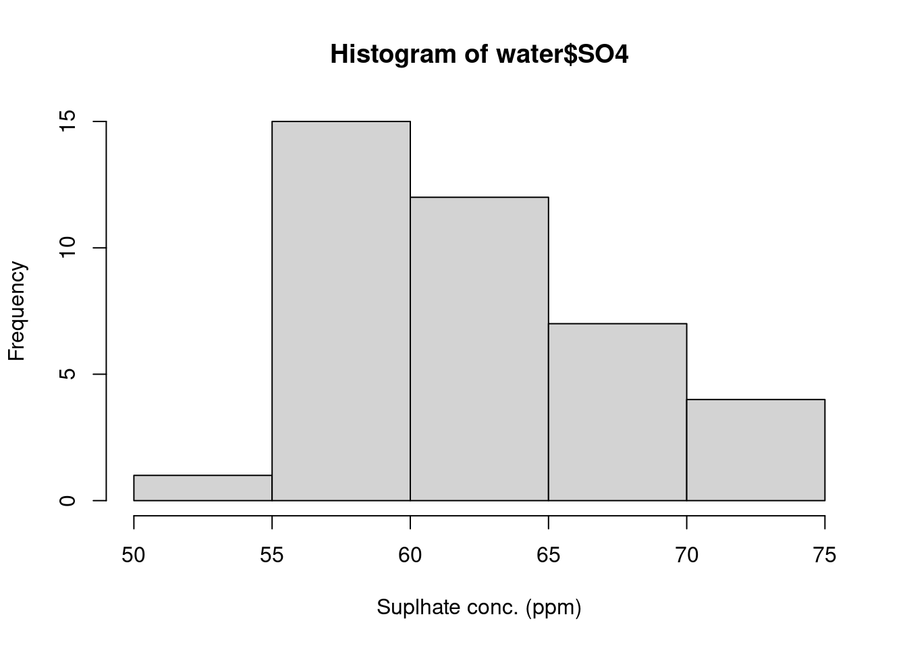
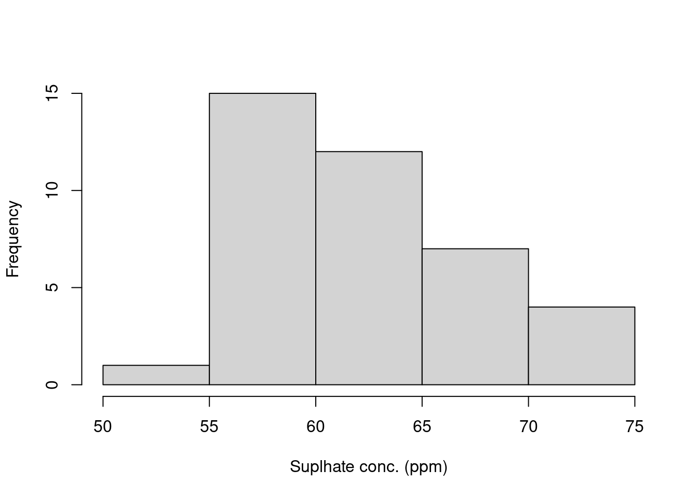
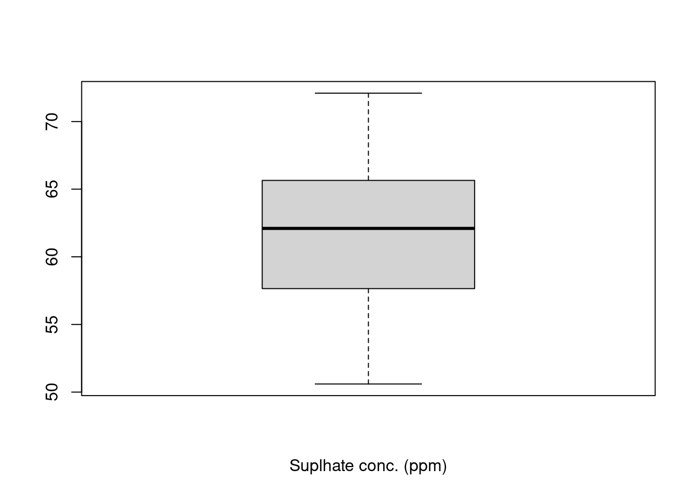
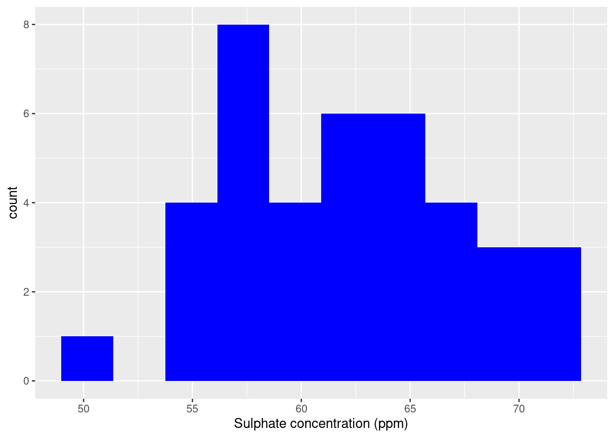

| statistic | command |
|---|---|
| median | median |
| sample variance | var |
| sample standard deviation | sd |
| minimum | min |
| maximum | max |
| 1st quartile | quantile(object,0.25) |
| 3rd quartile | quantile(object,0.75) |
| number of observations | length |
| interquartile range | IQR |
Create a new project or rmarkdown file for week 2
The first step is to create a new project file for week 2. Remember you will need to copy all of your data files into your project directory. For this tutorial we will be using the following data setENVX1002_Data2.xlsx
Summarising data
Today’s tutorial is about getting used to R and summarising data so we can start to get an understanding of the data such as how spread out it is and what value is the middle of the data. Some of the functions for calculating summary statistics in R are shown in the table below. We will explore some data sets using some of these functions.
Turf - Couch
Initially we will be entering in data manually and will explore a single variable!
A turf laboratory is interested in assessing the sod strength of Common Couchgrass (Cynadon dactylon cv. c29) grown on a sandy loam. Twenty-five samples were taken, and the sod strengths recorded (expressed in Newtons). The data are shown below in order from smallest to largest.
3.70, 3.81, 3.93, 4.02, 4.10, 3.71, 3.82, 3.98, 4.04, 4.10, 3.76, 3.85, 3.98, 4.05, 4.20, 3.78, 3.86, 3.99, 4.06, 4.21, 3.80, 3.86, 3.99, 4.10, 4.40
Using the variable y to indicate sod strength reading, the following values have been calculated:
\sum_{i=1}^{25}(y_i-\overline{y})^2=0.706 and \sum_{i=1}^{25}y_i=99.1 where \overline{y} is the sample mean of the data.
Using the information from the sample above, show what would be a typical value for sod strength of Common Couchgrass?
State two numerical ways of summarising the spread of a data set. Calculate both of these statistics for the Common Couchgrass data using R.
Using R, summarise the data and create a boxplot for the Common Couchgrass data.
Enter in the data manually
sod <- c(3.70, 3.81, 3.93, 4.02, 4.10, 3.71, 3.82, 3.98, 4.04, 4.10, 3.76, 3.85, 3.98, 4.05, 4.20, 3.78, 3.86, 3.99, 4.06, 4.21, 3.80, 3.86, 3.99, 4.10, 4.40)Summarise the data
summary(sod) ## 6 number summary Min. 1st Qu. Median Mean 3rd Qu. Max.
3.700 3.820 3.980 3.964 4.060 4.400 var(sod) ## Variance[1] 0.02941667sd(sod) ## Standard deviation[1] 0.1715129Generate a boxplot of the data
boxplot(sod, horizontal = TRUE)
Tuna - Two samples
Now we will be continue entering in the data manually but will explore two variables!
The table that follows gives the weights of two samples of albacore tuna, Thunnus alaluga (in kg). How would you characterize the differences in the samples?
Hint: Use R to calculate the sample mean, median, range and standard deviation or variance for each sample.
Sample1 = 8.9, 9.6, 11.2, 9.4, 9.9, 10.9, 10.4, 11.0, 9.7 Sample2 = 3.1, 17.0, 9.9, 5.1, 18.0, 3.8, 10.0, 2.0, 21.2
Sample1 <- c(8.9, 9.6, 11.2, 9.4, 9.9, 10.9, 10.4, 11.0, 9.7)
Sample2 <- c(3.1, 17.0, 9.9, 5.1, 18.0, 3.8, 10.0, 2.0, 21.2)
summary(Sample1) Min. 1st Qu. Median Mean 3rd Qu. Max.
8.90 9.60 9.90 10.11 10.90 11.20 summary(Sample2) Min. 1st Qu. Median Mean 3rd Qu. Max.
2.00 3.80 9.90 10.01 17.00 21.20 sd(Sample1)[1] 0.8006941sd(Sample2)[1] 7.180781Exploratory data analysis
Now we will be reading in data from an excel spreadsheet and will explore a single variable. To do this, we will need to read in our first package.
We will perform exploratory data analysis. The dataset is 39 measurements of water chemistry in streams published by Lovett et al. (2000). We will focus on the sulphate concentration. The data set is used by Quinn & Keough (2002) to describe summary statistics, and confidence intervals [Box 2.2, p. 21].
Reference: Lovett GM, Weathers KC & Sobczak WV (2000) Ecological Applications 10: 73-84.
Installing packages
All of the functions and data sets in R are organised into packages. There are the standard (or base) packages which are part of the source code - the functions and data sets that make up these packages are automatically available when R is opened. There are also many contributed packages. These have been written by many different authors, often to implement methods that are not available in the base packages. If you are unable to find a method in the base packages, you might be able to find it in a contributed package. The Comprehensive R Archive Network (CRAN) site (http://cran.r-project.org/) is where many contributed packages can be downloaded. Click on packages on the left hand side. We will download readxl package in this class using the install.packages command and we then load the package into R using the library command. This package is used to be able to read in Microsoft Excel files into R.
# install.packages("readxl")
library(readxl)Importing data from external files
The most common way to enter data into R is to import it from an external file. In this example we will import the data found in the worksheet called SO4 found in the ENVX1002_Data2.xlsx file that can be downloaded from the Tutorial and Computer Lab Page on Canvas.
After loading the readxl package, you can import the file as a data frame using the read_excel function. Note that you need to specify which worksheet you want to import.
water<-read_excel("ENVX1002_Data2.xlsx", sheet = "SO4")The above code creates a data frame object which consists of columns of data which may be of different types, e.g. character, numeric. In the code above we have called the object water.
To check the data has been read in properly it is recommended to use the str function, which shows the data type for each of the columns and gives the first 10 values for each column. The data frame water has only one column called SO4 and is numerical data, denoted by num.
str(water)tibble [39 × 1] (S3: tbl_df/tbl/data.frame)
$ SO4: num [1:39] 50.6 55.4 56.5 57.5 58.3 63 66.5 64.5 63.4 58.4 ...Referencing data in data frames
Individual values within data frames can be accessed by specifying its row and column number in square brackets, [ ]. The 1st number is the row number and the 2nd number specifies the column number. For example, to access the third value in the SO4 data we would use:
water[3,1]# A tibble: 1 × 1
SO4
<dbl>
1 56.5In this example 3 represents row 3, and 1 represents column 1. Entire columns of data can be referenced by leaving the row number blank:
water[,1]# A tibble: 39 × 1
SO4
<dbl>
1 50.6
2 55.4
3 56.5
4 57.5
5 58.3
6 63
7 66.5
8 64.5
9 63.4
10 58.4
# ℹ 29 more rowsIf the data frame contains column names, it is also possible to refer to columns by name, using the $ sign:
water$SO4 [1] 50.6 55.4 56.5 57.5 58.3 63.0 66.5 64.5 63.4 58.4 70.6 56.9 56.7 56.0 60.4
[16] 67.8 70.8 58.6 59.5 55.5 63.4 57.8 55.1 65.5 62.7 72.1 63.4 68.5 65.8 69.2
[31] 66.7 59.3 61.1 62.1 70.4 62.1 64.6 61.4 56.9To check for names in a data frame using the names command:
names(water)[1] "SO4"Or use the str function. To apply a function to a particular column in the data frame we need to specify the column, for example:
summary(water$SO4) Min. 1st Qu. Median Mean 3rd Qu. Max.
50.60 57.65 62.10 61.92 65.65 72.10 Graphical summaries
We can create histograms easily by using the hist function.
hist(water$SO4)
Now we need to label the figure properly. The arguments for labelling are xlab for the x-axis, ylab for the y-axis and main for the main title.
The y-axis is fine but the x-axis is incorrect. The standard way to label axes is by the name of property and also units. In this case it is sulphate concentration in parts per million.
hist(water$SO4, xlab= "Suplhate conc. (ppm)")
In scientific publications it is not normal practice to display the title within the figure itself so to remove the default title of histogram we can use the following code.
hist(water$SO4, xlab="Suplhate conc. (ppm)", main=" ")
boxplot(water$SO4, xlab="Suplhate conc. (ppm)", main=" ")
Now we have a figure we might want to export it as an image file to insert in a MS Word document for a report.
In the R graphics window you can go to the menu (File > Save As >> figure.png). This saves the image as a png file which is good for using with MS Word.
The same can be achieved with the command line.
png(file="histogram_SO4.png") # tells R the name of the file
hist (water$SO4, xlab="Sulphate conc. (ppm)",main=" ") # plots
dev.off() # turns off graphics windowNote that the image file, if you use the commands above, will be saved to your project directory. You can now go to MS Word and use the menu to insert your picture (Insert > Picture).
The table below gives heuristic rules about which graphical summary to use based on the number of observations.
| observations | graphics | command |
|---|---|---|
| 1-5 | plot raw data | stripchart |
| 6-20 | boxplot | boxplot |
| 20 or more | histogram | hist |
Advanced - ggplot2 package
We can make even nicer graphics using the ggplot2 package. Repeating the above example we get:
# install.packages(ggplot2)
library(ggplot2)
ggplot(water, aes(SO4)) +
geom_histogram(bins = 10, fill = "blue") +
xlab("Sulphate concentration (ppm)")
Change the number of bins to 5 and change the colour to red.